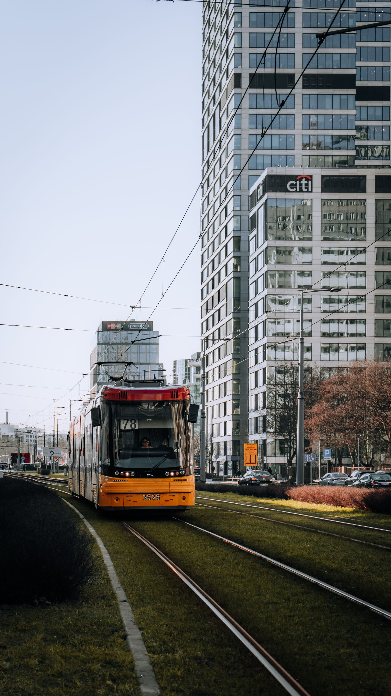

Sin plantillas traducidas: SEO en polaco, para búsquedas en polaco, en ciudades polacas.
Esto es lo que encuentra la auditoría gratuita — las brechas entre su empresa y los competidores polacos que ganan sus búsquedas, calificadas y explicadas en palabras sencillas.
Polonia es uno de los mercados digitales más dinámicos de Europa: 38 millones de personas, una escena de comercio electrónico en rápido crecimiento y clientes que investigan mucho antes de comprar. Los compradores polacos comparan precios en Allegro y Google, leen reseñas en polaco y desconfían de las empresas con poca presencia en línea. Si su empresa no figura en las búsquedas en polaco en su ciudad, un competidor que invirtió antes está captando esos clientes todos los días. El mercado es multicéntrico, lo que es importante para la estrategia de SEO. Varsovia es la capital empresarial y financiera, con la competencia más feroz por las palabras clave comerciales. Cracovia combina turismo, tecnología y servicios. Wroclaw y las tres ciudades de Gdansk, Gdynia y Sopot son centros tecnológicos y de subcontratación. Poznan se centra en ferias y B2B. Lodz, Katowice y Szczecin tienen cada uno sus propias economías locales. "Hydraulik Polska" no es una búsqueda; " Hydraulik Warszawa ", " Hydraulik Krakow " y " Hydraulik Wroclaw " tienen, cada una, diferentes competidores, volúmenes y culturas de revisión. Construyo ciudad por ciudad, empezando por donde realmente provienen tus ingresos. El lenguaje es todo el juego aquí. El polaco es un idioma con flexiones y signos diacríticos que cambian el comportamiento de búsqueda: la misma palabra con y sin signos diacríticos son en realidad dos palabras clave diferentes, con diferentes volúmenes y diferentes ganadores. Los casos cambian las terminaciones de las palabras según el contexto, por lo que la investigación de palabras clave debe cubrir las variantes que escriben las personas reales. Las palabras clave en inglés son casi irrelevantes para el mercado de consumo polaco; Incluso en B2B, el polaco domina el proceso de compra hasta el último paso. La capa de confianza se está formalizando rápidamente. UODO, la autoridad polaca de protección de datos, impuso una cifra récord de 64,3 millones de zloty en multas conforme al RGPD en 2025, una señal de que los años de indulgencia han terminado. Los clientes polacos son igualmente cuidadosos a la hora de elegir a quién compran: consultan las reseñas en Google y Facebook, buscan información comercial completa y notan inconsistencias. Una empresa con un perfil empresarial completo en Google, listados consistentes en Panorama Firm, PKT.pl y Targeo.pl y un flujo constante de reseñas polacas se considera legítima. Uno sin ellos no recibe la llamada. Mi enfoque para Polonia se basa en estas realidades: SEO técnico que es realmente sólido, investigación de palabras clave polacas con signos diacríticos manejados adecuadamente, una huella de citas en los directorios que usan los polacos, sistemas de revisión que producen reseñas polacas e informes en un lenguaje sencillo. Sin plantillas traducidas de campañas en inglés ni métricas personalizadas. Comienza con una auditoría gratuita que le muestra exactamente cuál es su posición frente a los competidores que se llevan a sus clientes.
Mantengo mi lista de clientes deliberadamente pequeña, para que cada empresa polaca obtenga trabajo directo y práctico — sin colas de entradas, sin administrador de cuentas junior.

Cuando alguien en Polonia busca lo que usted vende, Google muestra primero tres empresas y luego el resto. Si no estás en ese primer grupo, la mayoría de las llamadas van a otro lado.
Los clientes en Polonia buscan lo que usted vende. Nunca te encuentran. Sus competidores atienden las llamadas, silenciosamente, todas las semanas.
Apareces en el paquete de mapas y en los resultados orgánicos de las búsquedas de dinero de Polonia. Suena el teléfono y las personas que llaman ya están convencidas.
Cuatro escalones, construidos para Polonia. Sin jerga, sin informes de 40 páginas acumulando polvo: solo el trabajo que realmente mueve su clasificación.
Audito su presencia en Polonia de principio a fin (sitio web, perfil comercial de Google, reseñas y competidores) y le muestro exactamente qué es lo que lo frena, en palabras sencillas.
Reparaciones técnicas, perfil reconstruido y limpieza de citas en directorios polacos. La base poco glamorosa que hace que todo lo demás sea posible.
Páginas de ubicación, un motor de revisión funcional y creación de autoridades locales, adaptados a cómo buscan realmente los clientes de Polonia.
Cada mes: qué se movió, qué hice y qué sigue, en un lenguaje sencillo, con números honestos y cero métricas de vanidad.
La clasificación en Polonia no se trata de trucos. se trata de siendo la respuesta más completa y confiable cuando un cliente local realiza una búsqueda: en su sitio web, en su perfil comercial de Google y en toda la web local.
Eso es lo que creo para las empresas polacas: un perfil que parece vivo, páginas que coinciden con la forma en que los polacos buscan realmente y un flujo de reseñas que continúa mientras usted administra su negocio.
Aquí no hay ningún equipo de ventas de agencia. Soy la persona que hace el trabajo en tu clasificación polaca y la persona que responde cuando preguntas qué está pasando.
Tú hablas conmigo y yo hago el trabajo. Sin administradores de cuentas, sin colas de tickets, sin personal subalterno que aprende según su presupuesto.
No hago anuncios, redes sociales o branding. Se dedica cada hora a hacer que las empresas polacas sean visibles en Google.
Usted ve exactamente lo que está mal con su presencia polaca y lo que yo arreglaría, antes de que gaste nada. Si no puedo ayudarte, lo diré.
Informes escritos por un humano cada mes, en palabras que usted comprende: qué se movió, por qué y qué viene después.
Para las empresas polacas que estén pensando en contratarme, primero hagan una rápida verificación de honestidad.
Sin niveles, sin ventas adicionales, sin llamadas "empresariales". Un plan que cubre todo lo que una empresa en Polonia necesita para ganar búsquedas locales.
Obtenga una auditoría SEO gratuita de su negocio en Polonia: un desglose en inglés sencillo de lo que lo está frenando y exactamente lo que yo solucionaría primero.
Solicite mi auditoría gratuitaRespuestas directas a las preguntas que más escucho de los empresarios polacos.
Directa y prácticamente. La UODO de Polonia se ha convertido en una de las autoridades de protección de datos más agresivas de Europa: 64,3 millones de zlotys en multas solo en 2025, incluidos 27,1 millones contra Poczta Polska. Su consentimiento de cookies necesita una opción de rechazo real e igualmente destacada, y sus análisis deben respetarla. Más allá del riesgo de multa, el mal consentimiento altera tu medición: si la mitad de tus visitantes rechazan el seguimiento a través de un banner que no cumple, tus informes de SEO son ficción. Creo configuraciones de consentimiento que satisfacen las expectativas de UODO y al mismo tiempo mantienen sus datos limpios, porque en Polonia el cumplimiento y la mensurabilidad son el mismo proyecto.
Depende de su economía y le daré una respuesta honesta durante la auditoría. Allegro aporta alcance y confianza integrada, pero requiere margen y no le ofrece ninguna relación con el cliente; El SEO de su propio sitio genera valor de marca, mejores márgenes y clientes habituales, pero lleva meses. La mayoría de las empresas de comercio electrónico polacas terminan con ambos: Allegro para volumen, SEO en sitio propio para consultas de marca y de alto margen. Lo que no funciona es ignorarlo por completo. Evalúo sus márgenes, tasa de compras repetidas y categoría, luego recomiendo la combinación, incluso cuando Allegro por sí solo es la decisión correcta.
Enormemente. Con y sin signos diacríticos, la misma palabra polaca son en realidad dos palabras clave diferentes con diferentes volúmenes de búsqueda, y muchos polacos buscan sin signos diacríticos por costumbre o por conveniencia del teclado. Además de eso, la inflexión polaca significa que los casos cambian las terminaciones de las palabras, creando más variantes. Una investigación adecuada de palabras clave en polaco lo mapea todo: formas diacríticas y no diacríticas, variantes flexionadas y la intención detrás de cada una. Las agencias que investigan únicamente en forma de diccionario se dirigen a una fracción de la demanda real. Construyo el mapa variante completo antes de escribir una sola página.
Sí, como parte de una huella de citación polaca completa. Panorama Firm, PKT.pl, Targeo.pl, Firmy.net, BiznesFinder y Aleo son directorios nacionales que transportan tráfico local real y que Google interpreta como una corroboración autorizada de su negocio. Ninguno de ellos por sí solo genera inundaciones de tráfico, pero juntos separan una huella polaca completa de una pequeña, y en búsquedas competitivas en Varsovia o Cracovia, esa integridad es a menudo el factor de desempate. Los reclamo, corrijo y mantengo todos ellos como parte del trabajo de citación.
Cambiaron la combinación de motores lo suficiente como para importar. Las pantallas de elección de la UE recortaron aproximadamente 2,4 puntos de la participación polaca de Google en 2024, elevando a Bing a alrededor del 5,65%, una porción real de intención comercial, concentrada en las computadoras de escritorio, donde se lleva a cabo la investigación B2B. También significa que Bing Webmaster Tools y las pautas de Bing merecen una atención genuina aquí, no la mirada simbólica que les dan la mayoría de las agencias. Mi guía de Polonia optimiza Bing junto con Google y realiza un seguimiento de las clasificaciones en ambos, porque en este mercado ignorar más del 5 % de las búsquedas es dejar dinero sobre la mesa.
También ayudo a empresas de estas ciudades polacas a posicionarse en Google.
Reserve una llamada estratégica gratuita de 30 minutos. Auditaré tu visibilidad polaca en vivo y explicaré exactamente qué se interpone entre tú y el top 3.